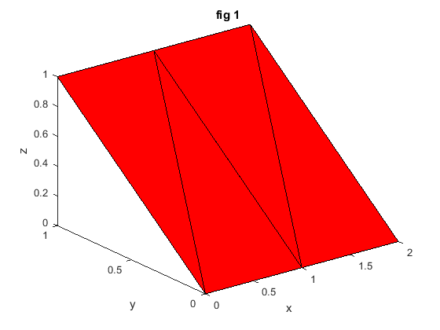
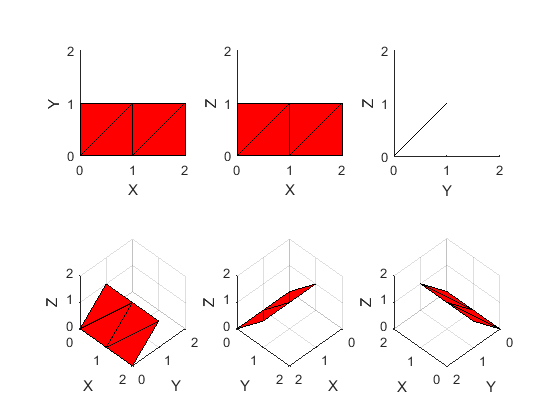

Contents
Example Fig. 1
figure(1);
f1 = axes('Parent',1);
x = [0 1 1 2; 1 1 2 2; 0 0 1 1];
y = [1 1 1 1; 1 0 1 0; 0 0 0 0];
z = [1 1 1 1; 1 0 1 0; 0 0 0 0];
fill3(x,y,z,'r')
title('fig 1')
xlabel('x')
ylabel('y')
zlabel('z')

Copy Fig. 1 into subplots of Fig. 2
f2 = figure(2);
copyobj(allchild(f1),subplot(2,3,1));
axis square
view(0,90)
copyobj(allchild(f1),subplot(2,3,2));
axis square
view(0,0)
copyobj(allchild(f1),subplot(2,3,3));
axis square
view(90,0)
copyobj(allchild(f1),subplot(2,3,4));
axis square
grid on
view(45,45)
copyobj(allchild(f1),subplot(2,3,5));
axis square
grid on
view(135,45)
copyobj(allchild(f1),subplot(2,3,6));
axis square
grid on
view(225,45)
AxesF2 = findobj(f2,'type','axes');
set(AxesF2,...
'xlim',[0 2],'ylim',[0 2], 'zlim', [0 2]);
XLabels = get(AxesF2, 'XLabel');
YLabels = get(AxesF2, 'YLabel');
ZLabels = get(AxesF2, 'ZLabel');
set([XLabels{:}], 'String', 'X');
set([YLabels{:}], 'String', 'Y');
set([ZLabels{:}], 'String', 'Z');
